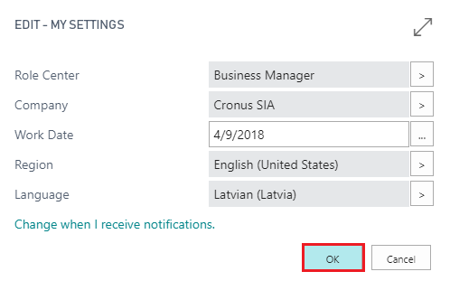

Galvenie lietošanas scenāriji
Pārskats
Latvian language (Latvia) ir biznesa programmatūras risinājums, kas izstrādāts ELVA priekš uzņēmumiem, kas nodarbojas ar uzņēmējdarbību Latvijas Republikā.
Latvian language (Latvia) ir pilnībā integrēta ar Dynamics 365 Business Central un nodrošina saskarnes un standarta pārskatu tulkojumu latviešu valodā.
Latvian language (Latvia) Nevar tikt uzskatīts par tulkošanas rīku:
- lietotāja ievadītai informācijai Dynamics 365 Business Central
- atskaitēm, ko nodrošina citi programmatūras risinājumi, kas ir integrēti ar Dynamics 365 Business Central
Piedāvātais apskats ļauj lietotājam:
- Dynamics 365 Business Central lietot saskarni un standarta atskaites latviešu valodā.
Apskats: Latviešu valodas izvēle
Par šo apskatu :
Šis apskats demonstrē procesu, kā iestatīt latviešu valodu Dynamics 365 Business Central saskarnē.
Lomas : Specifiskas lomas nav nepieciešamas
Stāsts : Jūs esat Katrīna Pavlova, mātes uzņēmums Cronus International norīkota finanšu direktore SIA Cronus Latvia. Uzņēmums veic uzņēmējdarbību mēbeļu tirdzniecības un konsultāciju pakalpojumu sniegšanas jomā, kas saistīti ar interjera dizainu pēc vietējo klientu pieprasījuma.
Cronus Latvia, SIA gribētu lietot Latvian language (Latvia), lai varētu samazināt valodas barjeru sistēmas vietējo lietotāju starpā. Jūsu uzdevums ir nomainīt saskarnes valodu latviešu valodā.
Priekšnosacījumi : Nav nepieciešami īpaši priekšnosacījumi.
Soļi :
- Aplikācijas lentes augšējā stūrī pa labi izvēlieties lietotāja nosaukumu un tad izvēlieties My Settings.

- My Settings logā atveriet pieejamo valodu izvēlnes saraksts.

- Pieejamo valodu sarakstā izvēlieties Latvian (Latvia).

- Apstipriniet izvēli nospiežot pogu OK un uzgaidiet, lai sistēma pārlādējas.

- Pārbaudiet vai valodas maiņa notikusi sekmīgi - apskatiet Dynamics 365 Business Central sākuma lapu latviešu valodā.

- Nospiediet meklēšanas pogu ... un ievadiet meklējamo vārdu: Klienti.
Izmantojiet latviešu valodu lapu un atskaišu meklēšanai Dynamics 365 Business Central

- Klientu sarakstā izvēlieties klientu: Nordic Group SIA.

Lai atvērtu klienta karti, noklikšķiniet uz klienta numura.
Izpētiet klienta karti latviešu valodā.